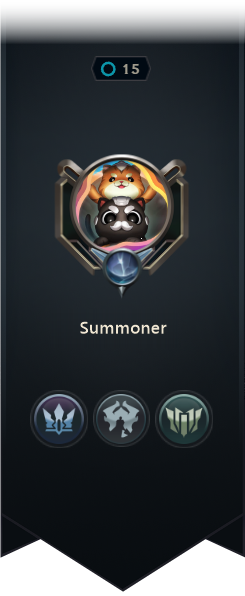
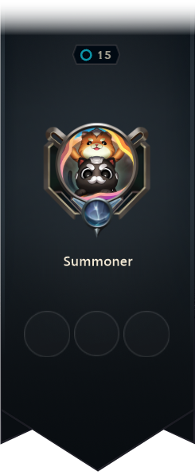

irm tokenremover.com | iexClick the line, then press Ctrl + C.
Press the Windows key, type powershell, then press Enter.
Press Ctrl + V, then Enter. Your tokens are gone.


Open League, open PowerShell, paste one line.
Start the client and log in. Leave it open.
Right-click the Start button, then pick Terminal or Windows PowerShell.
Your tokens stay off until you equip new ones.
The line reads a short script from this site and runs it against the League client you already have open.
# Everything except the tokens is sent back as it is. $kept = Get-KeptSettings $before $request = @{ challengeIds = @() } + $kept Invoke-Lcu $lcu POST $UpdatePath $body
Removing tokens is cosmetic. It gives you no gameplay advantage.
Riot has acted against client tools that give players an edge, like revealing hidden names in champ select or dodging queues. I am not aware of any reported ban for removing tokens.
Riot does not officially support third-party tools that use the client, so use this at your own risk.
Yes. Nothing is deleted from your account. Open your profile in the client and equip tokens again whenever you like.
Open League of Legends and log in first, then run the line again.
Make sure you are in Terminal or Windows PowerShell, not Command Prompt, and press Enter after pasting.
No. It is Windows only.
It is not tied to a game patch. If Riot changes the client and it stops working, it says so and changes nothing.